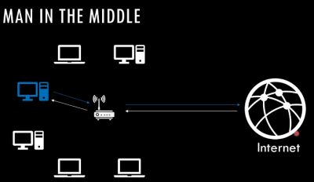
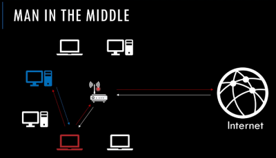

Conceptos de redes.

Una red como la que vemos aquí es un conjunto de equipos, hosts o nodos conectados entre si gracias a un enrutador o router y que mediante él se comunican con internet que es un conjunto de otras redes.
Para la comunicación local no es necesario un router, existen otros dispositivos como switches, etc para distribuir la información entre los nodos de la red.
Para identificarse dentro de la red se asigna una dirección física o MAC y el dispositivo de interconexión tiene esta información para redirigir la información de forma correcta.
Un router no va a ser más que un dispositivo que se va a ocupar de conectar dos redes, de manera que un nodo de una red pueda intercambiar información con otro nodo que se encuentra en una red diferente.
Para no tener que almacenar todas esas diferentes direcciones MAC físicas surge otro protocolo llamado dirección IP.
Esto permite que un nodo dentro de una red intercambie información con nodos de otras redes, el funcionamiento básico de internet.
Por lo tanto tenemos:
Suponiendo un caso práctico de hacer una petición a un servidor en USA por ejemplo, el funcionamiento sería:
Para obtener la dirección física del router se utiliza el protocolo ARP que, sabiendo la dirección IP del mismo o simplemente haciendo un prueba y error podemos preguntar a los diferentes nodos de una red cuales son sus direcciones MAC o si saben a quien pertenece esta dirección IP que le preguntamos.
Sencillamente si nuestro equipo a la hora de mandar ese paquete de red para solicitar el servicio del servidor en USA no sabe la dirección MAC del router, envía una petición ARP a todos los nodos dentro de la red preguntando si saben la dirección MAC de la dirección IP 192.168.0.1 que suele ser normalmente la asignada el router o simplemente la que tenga asignada y el router en este caso que es su dirección MAC le responderá verificando que es él.
En los equipos existe una cache de resolución ARP que almacena las veces que se ha preguntado pero al ser una red viva esta caché se va actualizando y eliminando de forma constante.
MITM:

El MITM o man in the middle se trata de suplantar la identidad del router en este caso que es el que se encarga de distribuir los paquetes a nivel de internet haciendo que todos los paquetes de uno o todos los nodos de la red local pasen por nuestra máquina antes de que nosotros los reenviemos al router.
Esto puede permitir que podamos analizar la información de los mismo así como modificarlos antes de que llegen al servidor o incluso paquetes que llegen desde el servidor hacia el cliente de igual forma.